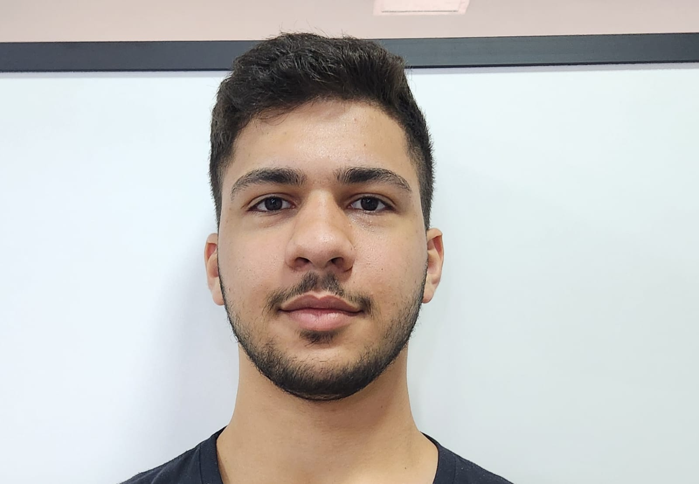

Olá 🖖, sou Vinicius de Oliveira Rebussi tenho 19 anos, estou no meu terceiro ano cursando
Bacharelado em Engenharia de Software no Instituto Federal do
Paraná (IFPR), e atualmente trabalho como estagiário de T.I na Unespar.

O Ensino Prático sobre Fake News para 3ª Idade, foi um projeto de extensão realizado no Instituto Mauricio Gehlen com com o objetivo de ensinar para a melhor idade como identificar uma fake news e mostrar como elas são criadas.